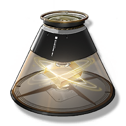

Casket Scan Component
Valuables

Used to activate the Casket Scan's search and positioning function for the Sonance Casket.
The most basic structure of the artificially reproduced and stored Remnant frequency, which can make the Casket Scan match the surrounding frequency with the Remnant information in the components, and locate the Sonance Casket in this way.